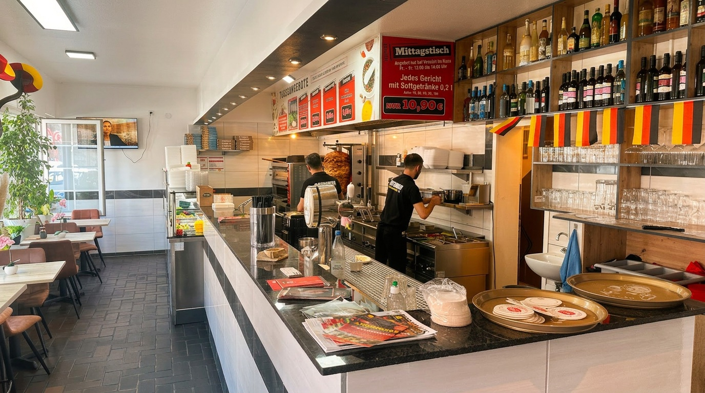
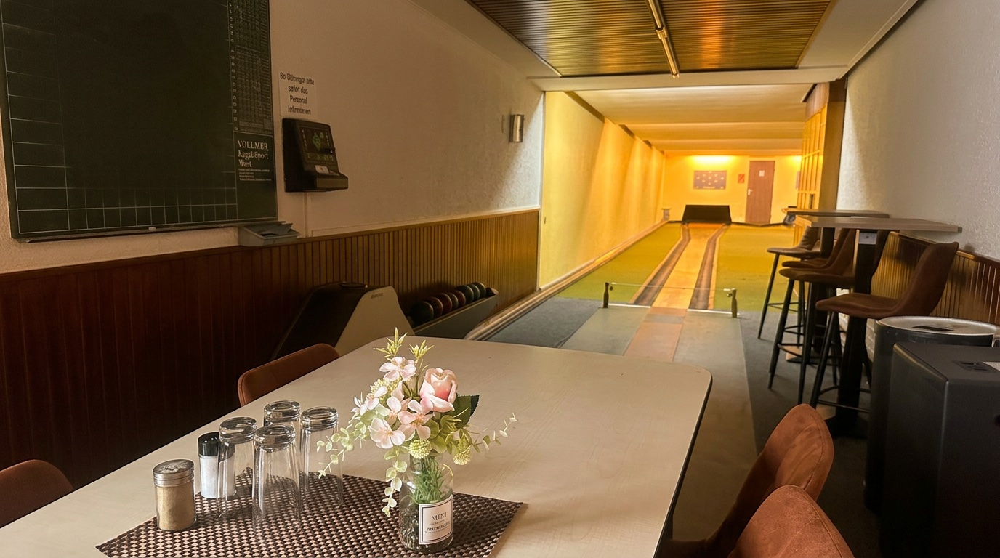
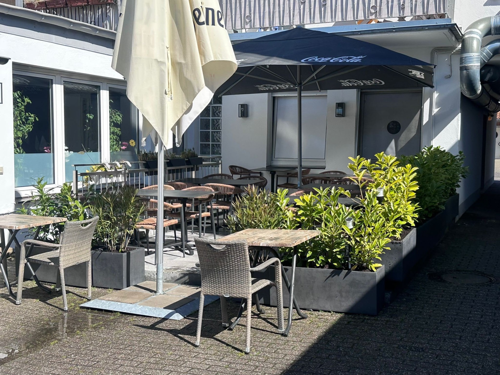
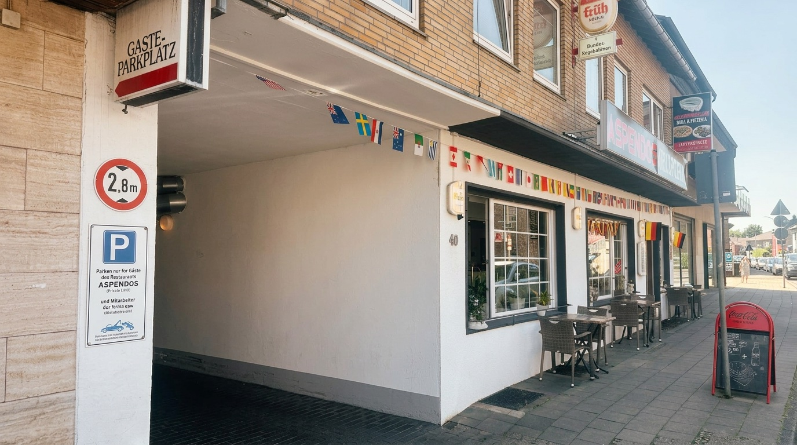

Klassiker
Pita Gyros
Saftiges Schweinegyros, frischer Salat, hausgemachtes Tzatziki im warmen Pita.
7,50 €

Saftiges Gyros, knusprige Schnitzel und leckere Pizza aus dem Ofen — seit Jahren der Lieblingsgrill in Breinig.
Alles frisch zubereitet
Gyros, Salate und Saucen jeden Tag frisch in unserer Küche.
Eigener Gästeparkplatz
Direkt neben dem Restaurant — bequem parken und einkehren.
Mitten in Stolberg
Schnell zu Fuß oder mit dem Auto erreichbar.

Highlight
Zwei Bundeskegelbahnen direkt im Haus — perfekt für Geburtstage, Firmenfeiern oder einen geselligen Abend mit Freunden.
Mehr erfahren
Neu
Unsere brandneue Terrasse im ruhigen Innenhof — perfekt für laue Sommerabende. Fotos folgen in Kürze.

Bequem parken
Direkt neben dem Restaurant findest du unseren eigenen Gästeparkplatz — ausschließlich für unsere Gäste reserviert (max. 2 Std., bitte Parkscheibe nutzen).
Beliebt
Klassiker
Saftiges Schweinegyros, frischer Salat, hausgemachtes Tzatziki im warmen Pita.
7,50 €
Aus dem Ofen
Gyros, Paprika, Schinken, Salami, Champignons & Ei — unser Signature-Pie.
13,50 €
Hausgemacht
Goldgelb paniert, mit knusprigen Pommes oder Reis serviert.
10,00 €
Vorbeikommen
Reserviere telefonisch oder komm spontan vorbei — bei uns ist immer ein Platz frei.
Auf der Heide 40, 52223 Stolberg (Rheinland)
Öffnungszeiten